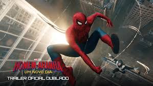
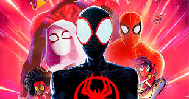

Novo filme confirmado!
O novo filme, Homem-Aranha: Um Novo Dia, estrelado por Tom Holland, tem estreia confirmada nos cinemas brasileiros para 30 de julho de 2026. Dirigido por Destin Daniel Cretton, o longa mostra Peter Parker enfrentando uma mutação genética, com participações confirmadas de Zendaya (MJ), Jacob Batalon, Jon Bernthal (Justiceiro) e Mark Ruffalo (Hulk)

Aranhaverso continua?
Sim, a saga Aranhaverso continua com o terceiro filme, intitulado "Homem-Aranha: Além do Aranhaverso" (Beyond the Spider-Verse), com estreia prevista para 18 de junho de 2027. A produção foi adiada para garantir a qualidade do encerramento da trilogia, focando na conclusão da jornada de Miles Morales contra o vilão Mancha.

Jogo faz sucesso
Spider-Man 2 se torna um dos jogos mais vendidos do PlayStation. Marvel's Spider-Man 2, lançado em 2023 para PlayStation 5, foi um sucesso absoluto. O jogo vendeu mais de 2,5 milhões de cópias nas primeiras 24 horas e superou 11 milhões de unidades até abril de 2024. Foi aclamado pela crítica e público, destacando-se pela narrativa e jogabilidade.